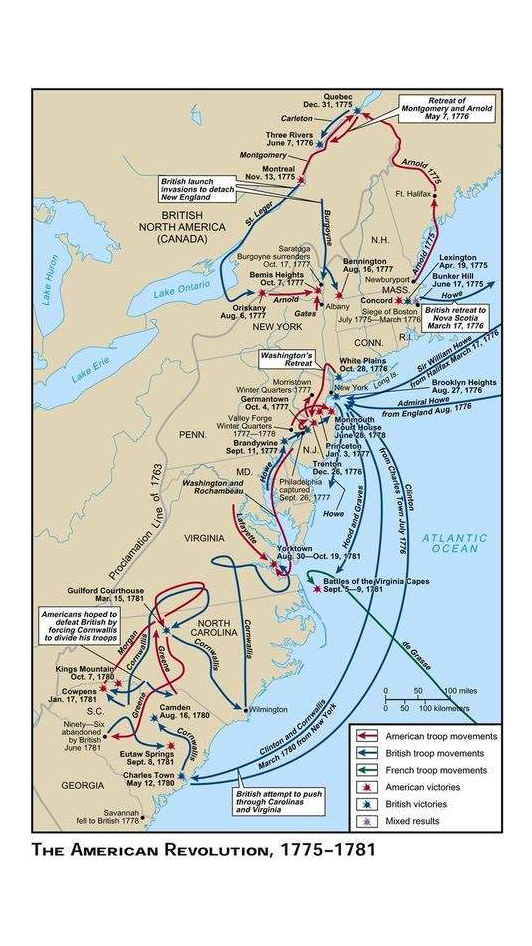

The committed patriots, only a minority of the American population, had to fight both loyalist Americans and the British. Loyalists were strongest among conservatives, city-dwellers, and Anglicans (except in Virginia), while patriots were strongest in New England and among Presbyterians and Congregationalists.
In the first phase of the war, Washington stalemated the British, who botched their plan to quash the rebellion quickly at Saratoga. When the French and others then aided the Americans, the Revolutionary War became a world war. However, that didn't make it an easy effort for the Americans.
American forces suffered badly in 1780–1781, but the colonial army in the South held on until Cornwallis stumbled into a French-American trap at Yorktown. Lord North’s ministry collapsed in Britain, and American negotiators achieved an extremely generous settlement from the Whigs.